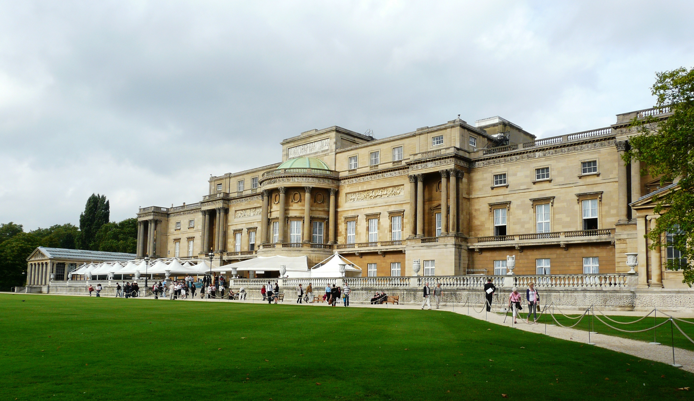

Things to do at Buckingham Palace
Changing of the Guard Parade (Video by netvega on Pixabay)
Changing of the Guard
💂Changing of the Guard is one of the most famous ceremonies in London. It normally takes place ouside of the Palace on Mondays, Wednesdays, Fridays, and Sundays. This ceremony involves its soliders in traditional uniforms marching. Tourists often gather early in the morning to watch this event, showcasing British tradition.
State Rooms Tour
🏛The palace offers rare tours to the public of the Palaces' State Rooms. It often runs during the summer, and it is highly advised to book in advance. The rooms are a mix of historical heritage and used for events with decorations of vintage paintings.
Buckingham Palace Gardens
🌳
Buckingham Palace Gardens (Photo by clarbner on Pixabay)
The Buckingham Palace is well known for its 39-acre private gardens in London. It features hundreds of trees, highly maintained foliage, and features a rose garden and artifical lake. Visitors are allowed to visit the gardens during the summer along with the State Room tours. If you have a green thumb, this activity is for you!
These are only some of the most popular attractions available at Bunckingham Palace!